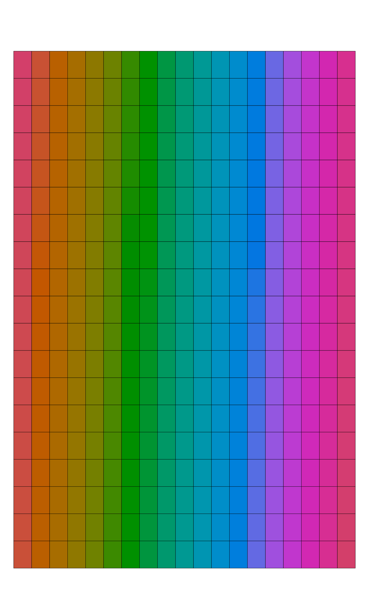
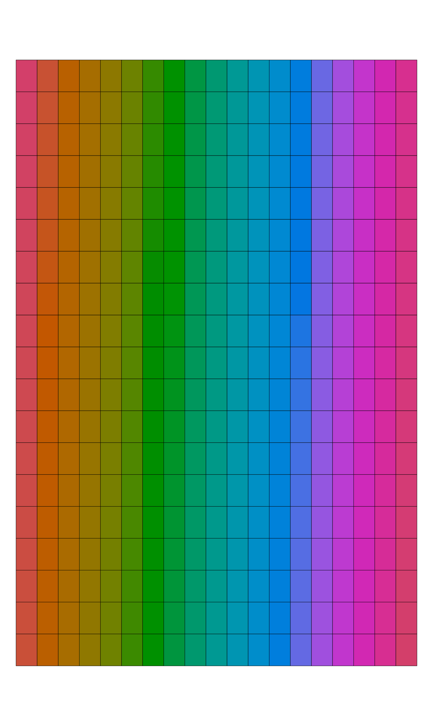

Preview colors arranged according to CIE2000 distances or manual specification.
Arguments
- cols
vector of R colors
- method
either "grid", "MDS", or "manual", see details
- labels
optional vector of labels, disabled when
length(cols) > 5000- labels.cex
scaling factor for labels
- col.order
integer vector used to order colors
- nrow
number of rows used by "grid" method
- ncol
number of columns used by "grid" method
- border.col
border color used by "grid" method
- pt.cex
point scaling factor used by "MDS" method
- pt.pch
point symbol used by "MDS" method
Value
When method = "grid" or "manual" a vector of color order is returned. When method = "MDS", the output from MASS::cmdscale.
Details
Color sorting is based on CIE2000 distances as calculated by farver::compare_colour(). The "grid" method arranges colors in a rectangular grid with ordering based on divisive hierarchical clustering of the pair-wise distances. Unique colors are used when cols contains more than 5,000 colors.
The "MDS" method arranges unique colors via classical multidimensional scaling (principal coordinates) via cmdscale().
Colors can be manually arranged by supplying a vector of integers to col.order and setting method='manual'.
Examples
# example data
data(sp2)
# convert into SoilProfileCollection object
depths(sp2) <- id ~ top + bottom
previewColors(sp2$soil_color)
 previewColors(sp2$soil_color, method = 'MDS', pt.cex = 3)
previewColors(sp2$soil_color, method = 'MDS', pt.cex = 3)
 # create colors using HCL space
cols.hcl <- hcl(h = 0:360, c = 100, l = 50)
# grid, colors sorted by dE00
previewColors(cols.hcl)
# create colors using HCL space
cols.hcl <- hcl(h = 0:360, c = 100, l = 50)
# grid, colors sorted by dE00
previewColors(cols.hcl)
 # manual specification
previewColors(cols.hcl, method = 'manual', col.order = 1:361)

# MDS
previewColors(cols.hcl, method = 'MDS', pt.cex = 1)
# manual specification
previewColors(cols.hcl, method = 'manual', col.order = 1:361)

# MDS
previewColors(cols.hcl, method = 'MDS', pt.cex = 1)